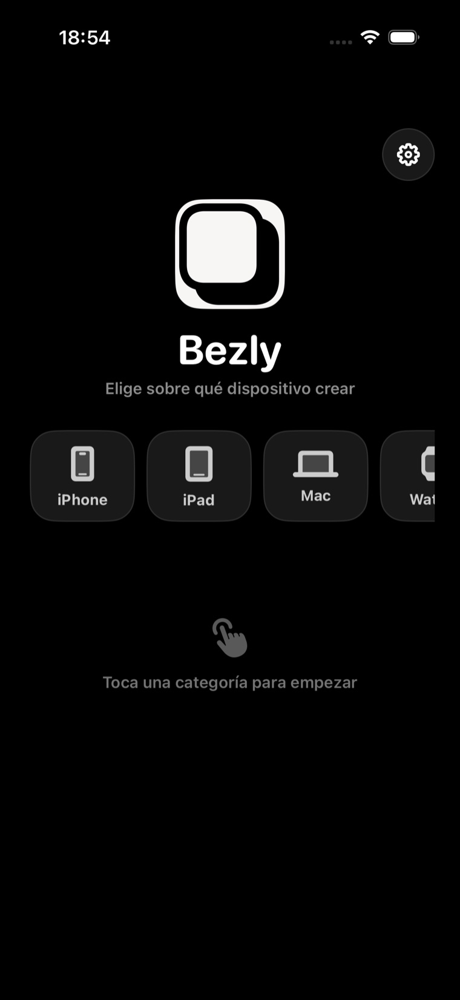
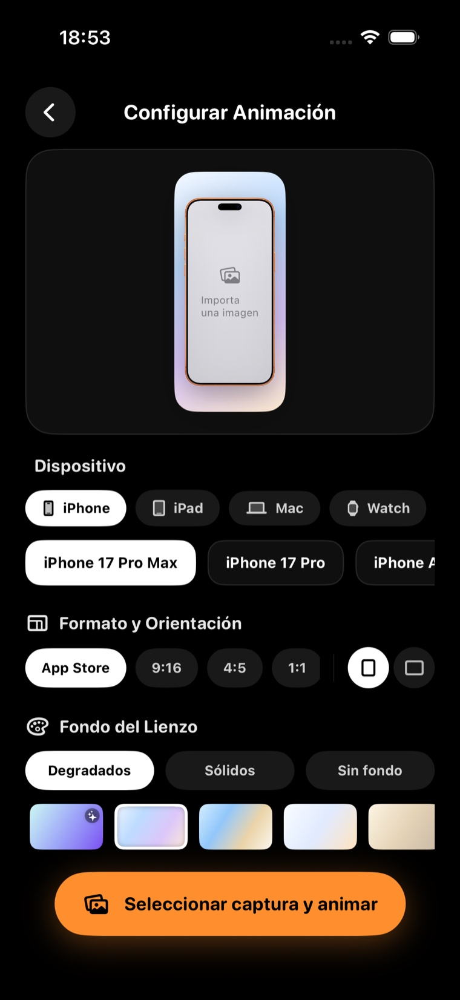

Start by choosing whether you are creating for iPhone, iPad, Mac or Apple Watch.
App Store & social composer
Create polished mockups, videos and launch assets.
Bezly turns screenshots, videos and device layouts into App Store-ready visuals from a focused private editor for iPhone.
On-device rendering
App Store formats
Video exports


Real app screens
Actual Bezly flows, captured from the app.
The product still uses a dark creation interface, but the website now stays bright and lets the app screens do the talking.
Pick the device, format, orientation and canvas background before exporting.
Why Bezly
From screenshot to launch asset in seconds.
Start with a screenshot, video, or animation ready for social channels and the App Store.
Change device models, backgrounds, shadow, format and zoom from one focused editor.
Save to Photos or Files as PNG, JPG or MP4 with sizes prepared for App Store and social formats.
Zoom: 1.25x
Timeline & Motion
Bring your designs to life.
Create fluid presentation videos by animating zoom and position on your screens. Use visual keyframes to structure your story.
- Position and zoom keyframes
- Adjustable motion curves
- Instant interactive timeline scrubbing
Layout presets
Multiple devices. Endless compositions.
Create custom setups that match your content. Move between iPhone, iPad, Mac, Apple Watch and video-friendly formats.
Single device layouts
Double & angled setups
Triple fan & steps configurations
Device family pairs
Privacy First
Your assets never leave your device.
The images and videos you import are processed 100% locally on your iPhone. Bezly does not use external servers to render your designs.
- On-device rendering and exports
- Zero telemetry on personal assets
- Secure local sandbox folders
Local processing
Ready to frame your software?
Bezly is being built now and will live here with its App Store link as soon as it is ready.